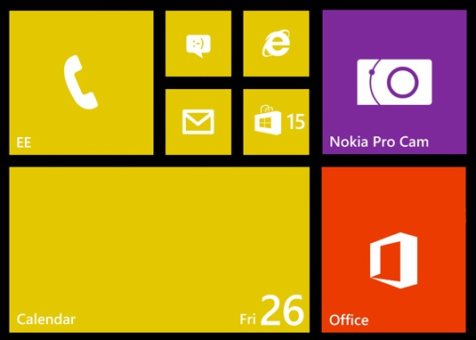

Sau kì thi lập trình game trên điện thoại di động, bạn Nam được trao thưởng chiếc điện thoại Nokia Lumia 1520 huyền thoại. Màn hình của Lumia 1520 là một bảng hình chữ nhật có 6 cột và có số lượng dòng tùy ý. Mỗi ứng dụng là một Live Tile có kích thước là 1 x 1 ô hoặc 2 x 2 hoặc 2 x 4 ô (2 dòng 4 cột, không có 4 dòng 2 cột) tùy theo điều chỉnh. Nam có m ứng dụng và cậu muốn sử dụng m Live Tile tương ứng để tạo thành một màn hình có kích thước n x 6 (n dòng, 6 cột). Hình bên dưới là ví dụ một màn hình 4 x 6 được tạo thành từ 8 ứng dụng.

Nếu ký hiệu ô 1 x 1 bằng ký tự S (small), ô 2 x 2 bằng ký tự M (medium), ô 2 x 4 bằng ký tự L (large), ta biểu diễn ví dụ trên như sau:
MMSSMM
MMSSMM
LLLLMM
LLLLMM
Bạn hãy giúp Nam bố trí m ứng dụng trên thành bảng n x 6 nhé.
Dữ liệu nhập:
- Là 2 số nguyên n và m cách nhau một khoảng trắng (1 ≤ n ≤ 20, 1 ≤ m ≤ 100)
Dữ liệu xuất:
- Nếu từ m ứng dụng không thể tạo bảng Live Tile n x 6: in ra NO.
- Nếu có thể tạo bảng Live Tile n x 6 (phải phủ tất cả các ô):
+ Dòng đầu tiên in ra YES.
+ Trong n dòng tiếp theo, mỗi dòng in ra 6 ký tự (trong 3 loại S, M, L) để tạo thành màn hình kết quả. Nếu có nhiều đáp án, in một đáp án bất kỳ.